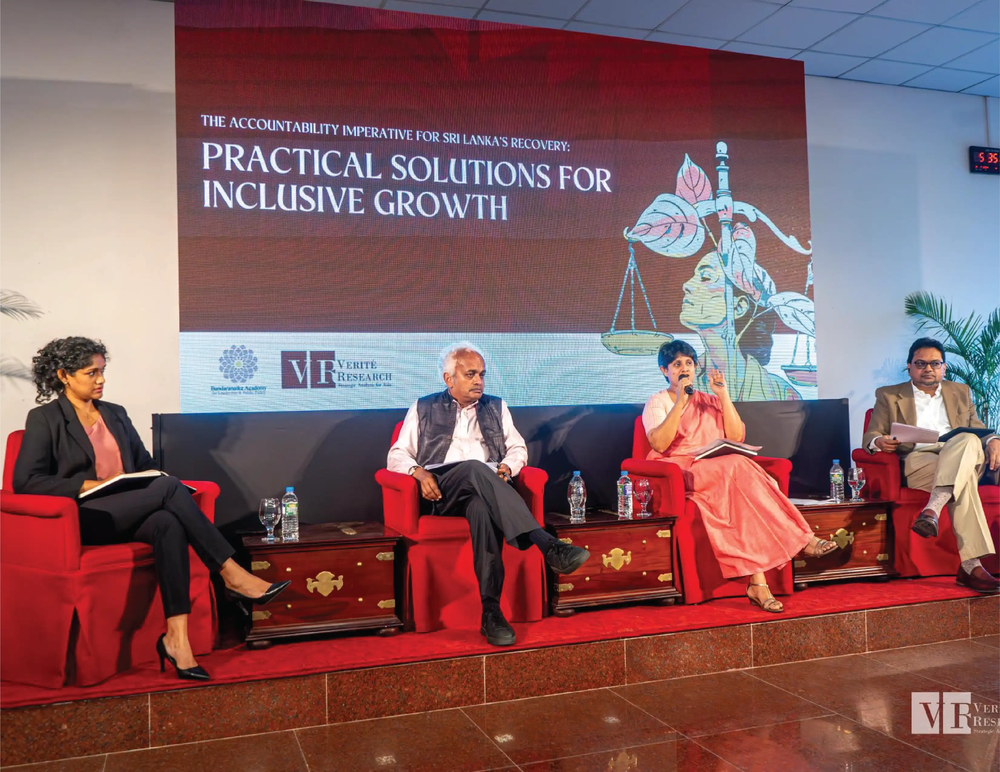
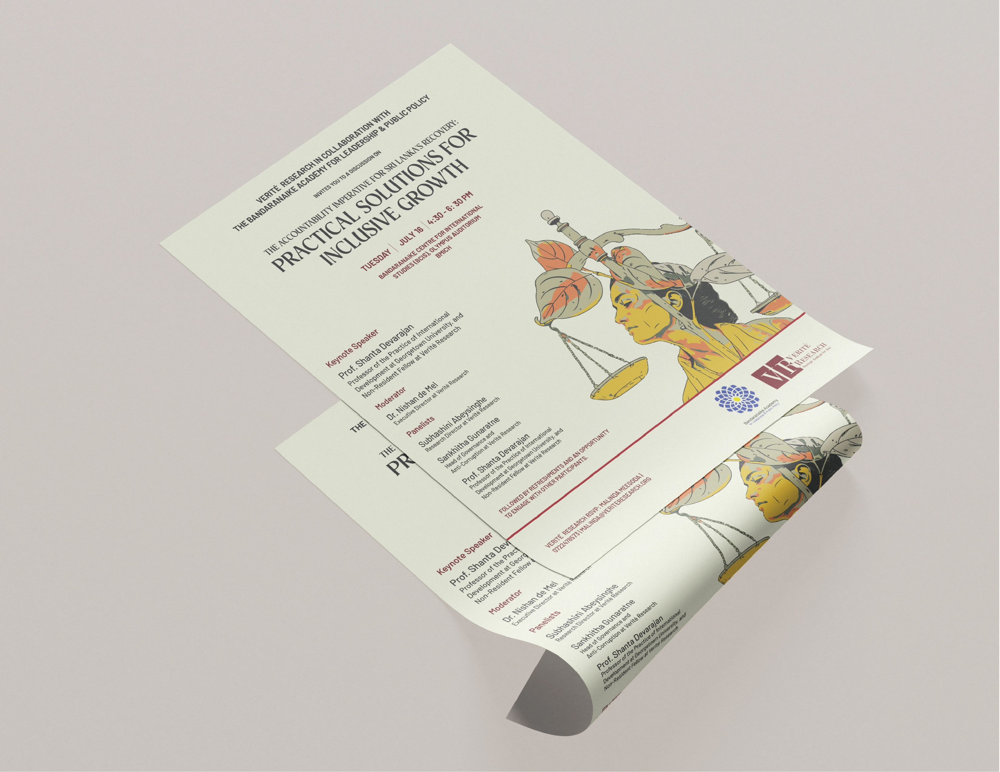
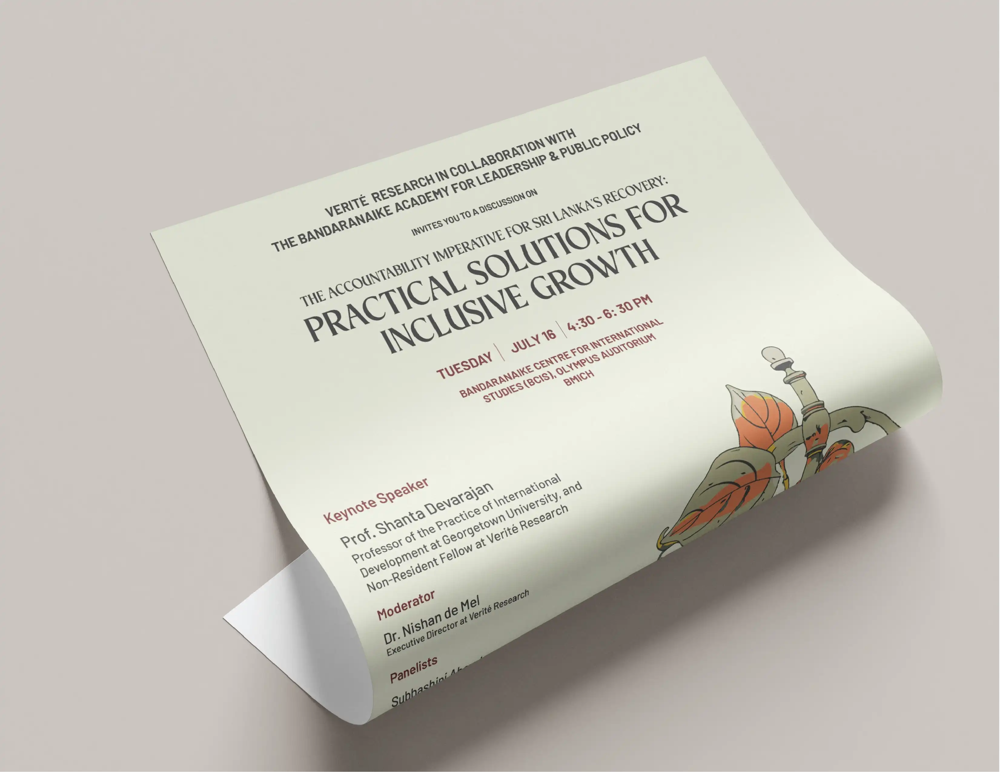
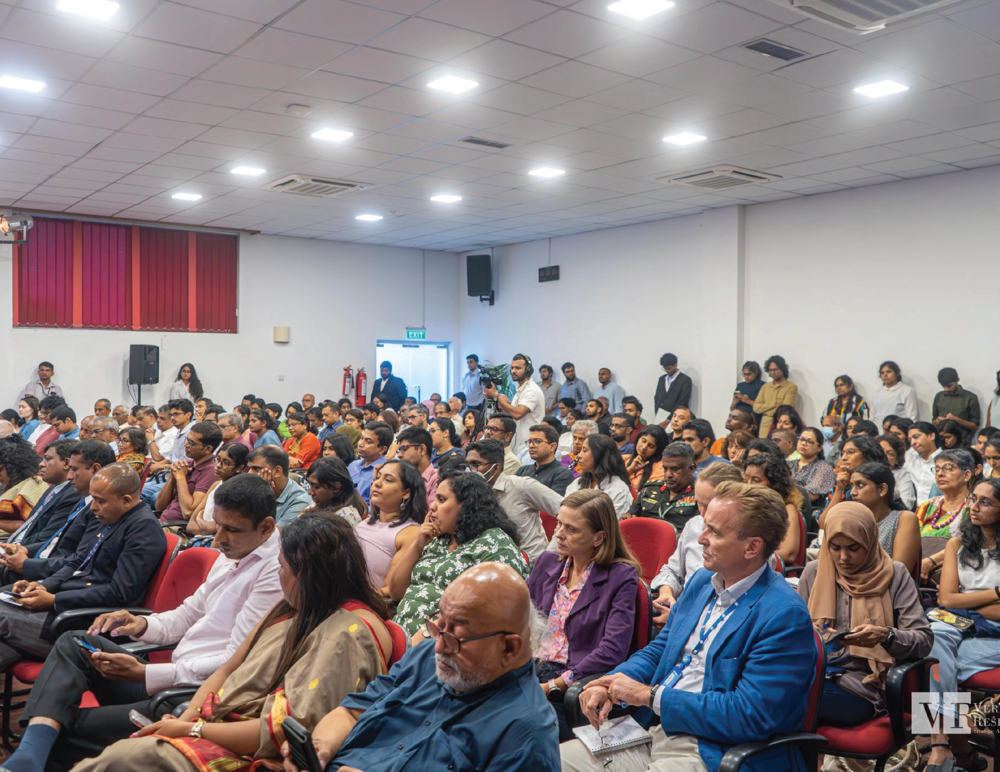

Practical Solutions for Inclusive Growth
A framework for addressing the root causes of Sri Lanka's economic crisis through accountability and targeted reforms.



“How can a country that was doing so well end up in this kind of crisis? The answer to all of that is one word: accountability.”
